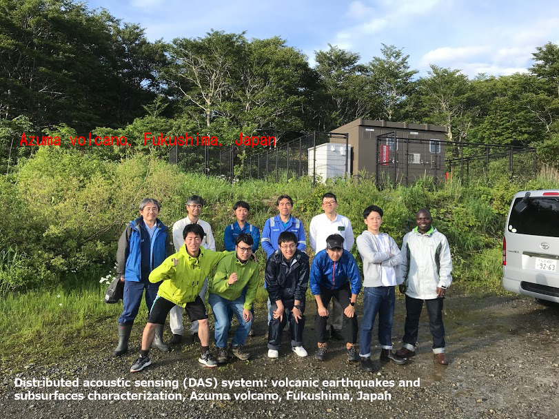
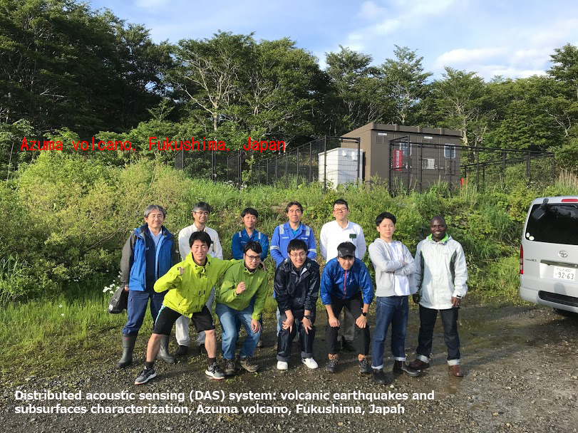
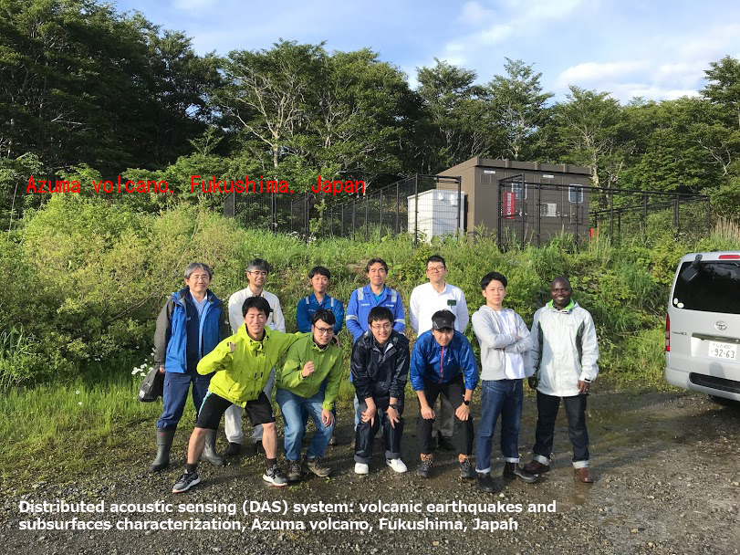
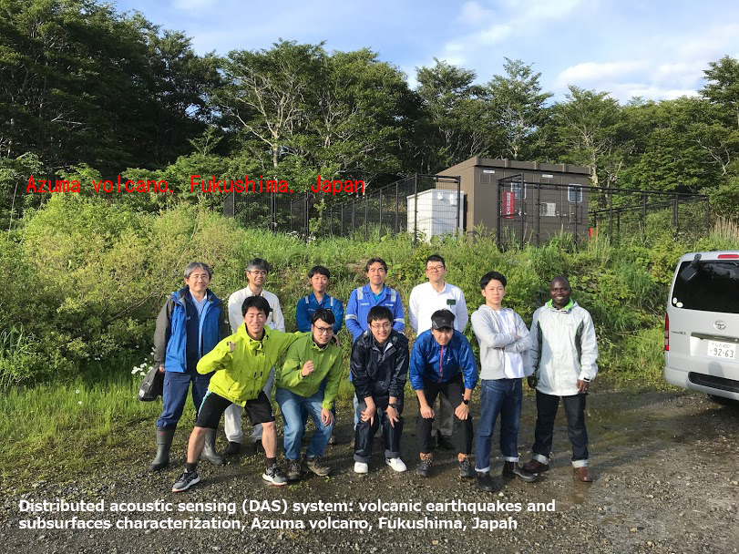

 

I am Thystere Matondo BANTIDI, a Research Associate at Association for the Development of Earthquake Prediction (ADEP), Tokyo, Japan. Before joining ADEP, I was a postdoctoral fellow at Research Center for Prediction of Earthquakes and Volcanic Eruptions, Tohoku University, Sendai, Japan, under the supervision of Prof. Satoshi Miura and Associate Prof. Mare Yamamoto. I received my Ph.D. in Geophysics from Tohoku University (Solid Earth Physics Laboratory, Department of Geophysics, Graduate School of Science), Sendai, Japan, under the supervision of Prof. Takeshi Nishimura and a B.S. in Physics from the University of Kinshasa, DR Congo. My general research interest surrounds the probabilities of occurrence and precursory warnings of natural hazards, with an emphasis on earthquakes, tsunamis, and volcanoes. My primary research interest is on the characteristics of the triggering and occurrence probability of large earthquakes and the intensity of hazardous ground motions. Indeed, earthquake predictability, the degree to which the future occurrence of earthquakes can be determined from observable behavior, has proven elusive. This lack of understanding is the gap in our knowledge that I am hoping to fill with my research. I ension that my results could help reduce earthquake losses by improving community preparedness and resilience.
B.Sc. Physics
Teaching and Research Assistant

M.Sc. Geophysics
Ph.D. Geophysics
Postdoctoral fellow

Research Associate

Seismicity measures the occurrence frequency of earthquakes in space, time, and magnitude. While earthquake triggering refers to the process by which earthquakes nucleate, the interactions involved in this process, and the resulting consequences for time-dependent hazards. By combining physics-based models (e.g., rate and state friction law) with statistical earthquake models (e.g., the Epidemic Type Aftershock Sequence (ETAS) model), we can achieve more accurate forecasts for earthquake probabilities in both space and time.
Learn More
When considering the probability of volcanic eruptions, one should acknowledge that these events are represented by a stochastic time series, meaning that eruptions can be viewed as a random variable indexed in time. The alternative is a deterministic model, characterized by no randomness in its parameters. Theoretically, by completely specifying a deterministic model, events could be predicted at any point in the future. However, such models seem unachievable in natural systems. Since volcanic processes are inherently random, a sequence of volcanic events can only be treated as a stochastic time series and modeled by fitting statistical distributions, leading to probabilistic estimates of variables such as repose times (or interevent times).
Learn More
Simulating tsunami heights generated by massive earthquakes and the time it takes to reach the coasts can save lives. We develop methods to analyze potential scenarios of megathrust earthquakes and the tsunamis that may result from them.
Learn More
Bantidi, T. M., T. Ishibe, B. Enescu, G. M. Tuluka, 2024. Estimating spatio-temporal variable parameters of Epidemic Type Aftershock Sequence model in a region with limited seismic network coverage: a case study of the East African Rift System. Geophysical Journal International. https://doi.org/10.1093/gji/ggae299.
Bantidi, T. M., 2023. Effect of permanent stress on the time-dependent earthquake probability: implication for seismic hazard assessment in the African continent. Geophysical Journal International. https://doi.org/10.1093/gji/ggad121.
Bantidi, T. M., G. M. Tuluka, 2023. Stochastic Modeling of the Eruption History of Nyiragongo Volcano in the Virunga Volcanic Province, Western Branch of the East African Rift System. Statistics in Volcanology. https://doi.org/10.5038/2163-338X.5.1.

Bantidi, T. M., 2022. Inter-occurrence time statistics of successive large earthquakes: analyses of the global CMT dataset. Acta Geophysica. https://doi.org/10.1007/s11600-022-00908-2. [feel free to email me for reprints].
Bantidi, T. M., T. Nishimura, 2022. Spatio-temporal clustering of successive earthquakes as inferred from analyses of global CMT and NIED F-net catalogs. Earth Planets and Space. https://doi.org/10.1186/s40623-022-01677-4.
Bantidi, T. M., 2023. Old dike swarms could influence future fault ruptures. Temblor. http://doi.org/10.32858/temblor.323.
Bantidi, T. M., 2023. Machine learning approach for disaster-related trauma and subsequent functional limitations. Temblor. http://doi.org/10.32858/temblor.311.
Bantidi, T. M., at al., 20xx. Seism..... xxxx Journal. doi.xxxx. [feel free to email me for reprints].

Bantidi, T. M., T. Ishibe, R.S. Matsu'ura, 2024. Source of the 1755 Lisbon Earthquake: A Phenomenological Reconstruction Based on Historical Records and Tsunami Simulation. The 2024 Seismological Society of Japan Fall Meeting. Toki Messe, Niigata, Japan. [Oral].
Bantidi, T. M., T. Ishibe, R.S. Matsu'ura, 2024. Reappraising the Generation Mechanism of the 1755 Lisbon Earthquake: Constraints from Historical Records and Tsunami Simulation. The 2024 Japan Geoscience Union Meeting. Makuhari Messe, Chiba, Japan. [Poster].
Ishibe T, T. Terakawa, A. Hashima, T.M. Bantidi, M. Mochizuki, R.S. Matsu’ura, 2024. The Method of Estimating Fault Slip Angles by Using Regional 3D Stress Field According to the Wallace-Bott Hypothesis for the Major Active Fault Zones ~ Effect of Uncertainties in Fault Geometry on the Estimated Rake Angles~. The 2023 Japanese Society for Active Fault Studies, Fall meeting.Kyushu University Nishijin Plaza, Fukuoka, Japan.[Oral].
Bantidi, T. M., T. Nishimura, 2021. Spatio-temporal clustering of successive earthquakes: analyses of global CMT and F-net catalogue. The 2021 Seismological Society of Japan Fall Meeting. Online. [Oral].
Bantidi, T. M., T. Nishimura, 2020. Spatio-temporal clustering of successive earthquakes in Japan: analyses of F-net catalogue. The 2020 Japanese Geoscience Union-American Geophysical Union (JpGU-AGU) joint meeting. Online. [iPoster].
Bantidi, T. M., T. Nishimura, 2019. Spatio-temporal clustering of successive earthquakes: data analyses of global data. The 2019 American Geophysical Union, Fall meeting. Moscone center, San Francisco, USA. [Oral].
Bantidi, T. M., T. Nishimura, 2019. Spatio-temporal clustering of successive earthquakes in Japan: analyses of JMA catalogue. The 2019 Seismological Society of Japan Fall Meeting. Kyoto University, Kyoto, Japan. [Poster].
Bantidi, T. M., T. Nishimura, 2019. Spatio-temporal clustering of successive earthquakes: data analyses of global data. The 2019 Japan Geoscience Union Meeting. Makuhari Messe, Chiba, Japan. [Poster].
Bantidi, T. M., T. Nishimura, 2018. Triggering and Coulomb stress interaction of Successive large earthquakes. The 2018 Japan Geoscience Union Meeting. Makuhari Messe, Chiba, Japan. [Oral].
Bantidi, T. M., 2014. Seismicity of the Democratic Republic of Congo and the plate tectonic theory. Semaine de la Science et des Technologies, Edition 2014. Athénée de la Gombe, Kinshasa, DR Congo. [Oral].

Distributed acoustic sensing (DAS) system: volcanic earthquakes and subsurfaces characterization, Azuma volcano, Fukushima, Japan

San Andreas Fault, California, USA

Sakurajima volcano, Kagoshima, Japan